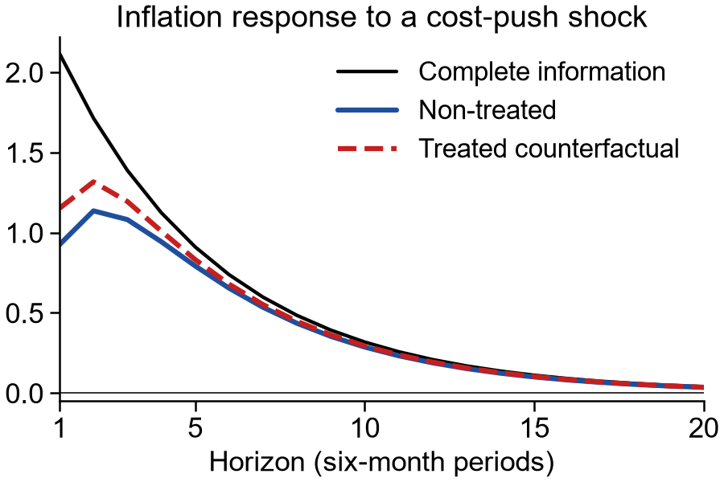

Research
Job Market Paper
Abstract
Survey evidence documents anger and perceived unfairness among consumers facing rising prices. I study a mechanism through which these reactions can generate welfare losses by embedding reference-dependent demand in a New Keynesian model. When posted prices exceed reference prices formed from past purchases, the same physical consumption bundle delivers less utility. This generates a first-order welfare cost of inflation absent from standard models. I calibrate the parameters governing these losses using a survey with hypothetical shopping scenarios that vary reference prices while holding posted prices fixed. Under the baseline calibration, welfare losses are about four times those in the standard model for cost-push shocks matched to a 1% peak in quarterly inflation. To quantify this cost during the recent inflation surge, I fit a heterogeneous-agent model with reference-dependent demand for frequently purchased goods to U.S. macroeconomic data from 2021–2023. The average household loses the equivalent of 5.8% of annual steady-state consumption, about one-fifth more than without reference dependence.
Working Papers
Abstract
Using a long-running randomized treatment in a survey of Italian firms, we ask whether sustained access to recent inflation data changes how managers update forecasts in response to news. The treatment attenuates deviations from full-information rational expectations (FIRE): relative to non-treated managers, treated managers' consensus forecasts underreact less and individual forecasts overreact less. Among competing models, noisy information with overconfidence in private information fits the evidence best. A common signal with the experiment's precision moves the incomplete-information Phillips curve a quarter of the way toward its FIRE counterpart and raises inflation's impact response to cost-push shocks by about 25 percent.

Abstract
We document that changes in disagreement amongst the members of the Federal Open Market Committee (FOMC), as measured by dispersion in the dot plots, are negatively associated with changes in market-based monetary policy uncertainty around FOMC meetings. Our preferred explanation for this negative relationship comes from a Bayesian learning model in which the market learns about the committee balance of power between hawks and doves by observing the interest rate decision and the dot plot. The model has two countervailing forces: (1) more disagreement makes the learning process stronger, as when the views of hawks and doves are further apart the current rate decision better reveals whose views shape policy, decreasing monetary policy uncertainty, and (2) more disagreement, particularly when highly persistent, makes the future range of policy actions wider, increasing monetary policy uncertainty. Finally, we use heteroskedasticity-based identification exploiting variation in the Federal Reserve's communication strategy with the introduction of the dot plot to explore the effect of monetary policy uncertainty shocks. Our monetary policy uncertainty shocks load negatively on dot plot disagreement, depress investment consistent with a real-options channel, and do not seem to affect credit spreads.
Abstract
An extensive literature documents that personally experienced returns disproportionately shape households' expectations and financial decisions. Whether these experiences lead households to make costly financial mistakes is less understood. Using residence histories from the University of California Consumer Credit Panel, we construct person-specific measures of historical county house-price returns linked to residential locations. Moving from the 25th to the 75th percentile of experienced returns predicts an increase in quarterly mortgage entry equivalent to 10.0% of the average entry probability. Higher experienced returns also predict greater mortgage borrowing and subsequent distress: among entrants, moving from the 25th to the 75th percentile of experienced returns predicts an increase in two-year delinquency equivalent to 19.8% of its average probability. In a simple model with rational expectations, households may accept greater delinquency risk when higher experienced returns signal greater future house-price appreciation. Instead, we find that higher experienced returns predict lower subsequent county house-price appreciation. These findings support an experience-based extrapolation mechanism in which optimistic housing beliefs raise mortgage commitments relative to available cash, increasing delinquency risk.